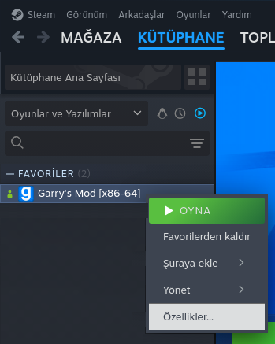
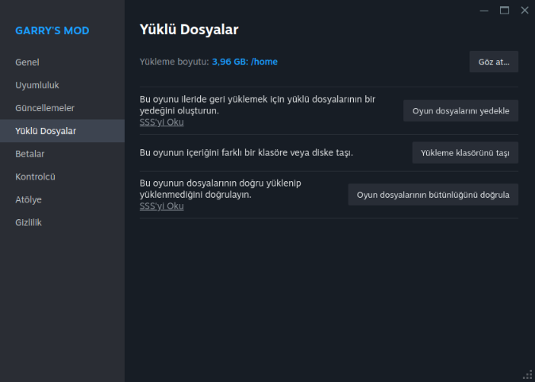
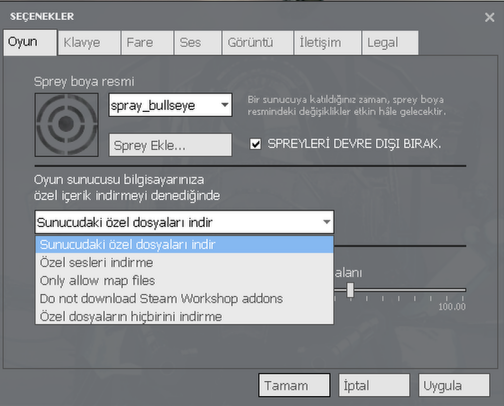

Sıkça Sorulan Sorular
Etrafta her şey error, ne yapmalıyım?
Gerekli workshopları indirdiğinizden emin olunuz.
Eğer workshopların hepsini indirmenize rağmen error alıyorsanız, deneyebileceğiniz birkaç yol mevcut. Bunlar:
|  |
|
|  |
|
|
|
|
|
|
|
|  |
|
"This typically means you are running out of Video Memory on your GPU" hatası alıyorum?
Oyunda görüntüler kesik kesik; bir taraf var, bir taraf yok. Görüntüler iç içe girmiş. Ne yapmam gerekiyor?
ESC tuşuna basınız, ardından "Oyun Ayarları"na basınız. Görüntü kısmına gelerek "Gelişmiş"e tıklayınız ve ardından "Model Detayları"nı yüksek seviyeye ayarlayınız. Ancak, bu değişikliği yaptığınızda oyundan donup kapanabilir. O yüzden bu değişikliği yaparken üzerinde Bio-organ vb kullanmamış olmanızı öneririz.
Konsol/Console Nedir?
oyuncuların oyun içindeki komutları girerek çeşitli işlemler yapmalarını sağlayan bir araçtır. Bu konsol sayesinde oyun ayarlarını değiştirmek, hata ayıklamak gibi işlemler gerçekleştirilebilir.
F1, F2, F3, F4, M, T gibi tuşları başka tuşa atayabilir miyim?
Sunucumuza özel tuş atamaları olduğu için değiştiremezsiniz.
Tuşlarım çalışmıyor, neden?
Bir problem oluşmuş olabilir, oyun ayarlarından klavye menüsüne gelerek varsayılan düzeye geçip sorunu kontrol edebilirsiniz.
Eğer sorun çözülmez ise konsolu (` tuşu) açınız ve aşağıdaki komutları yazınız.
unbindallexec config_default.cfgOyunda sesim diğer oyunculara gitmiyor, ne yapmalıyım?
İlk önce oyun ayarlarından iletişim sekmesinden mikrofonunuzu test etmelisiniz. Ardından mikrofon ayarlarına girip Steam arayüzüne yönlendirecek ve orada mikrofonunuzu seçmelisiniz. Test yaptığınız halde ses gitmiyorsa, Windows ayarlarınızdan kontrol etmeniz gerekebilir. Sanal mikrofon uygulamaları varsa bunları devre dışı bırakıp tekrar deneyiniz.
Aile Paylaşımı ile sunucuya nasıl katılırım?
MoonGaming Discord sunucusuna gelip ticket açmanız gerekmektedir.
GeForce Now ile sunucuya nasıl katılırım?
MoonGaming Discord sunucusuna gelip ticket açmanız gerekmektedir.
GeForce Now'da Garry's Mod nasıl betaya alırım?
Maalesef, Chromium betasına geçiremezsiniz; GeForce Now bunu desteklememektedir.
Oyunda bayıldım, sonrasında ilk yardım ekibi gelip beni canlandırdı ve silahımı atamıyorum, neden?
Oyunda bayıldıktan sonra ilk yardım ekibi gelip sizi hayata döndürdüğünde, silahınızı artık droplayamazsınız.
Envanterimdeki kutuyu nasıl açabilirim?
MoonShop'a gidip anahtar almalısınız. Ardından kutuyu anahtara sürükleyip "... ile birlikte aç" seçeneğine tıklamalısınız.
Araç Nereden Satın Alabilirim?
Araç satın almak için galeriye gidip NPC'lerden satın alabilirsiniz.
Aracım NPC'de yok, aracımı nasıl çıkartacağım?
Araba satın aldığınızda, ilk olarak araç envanterinize eklenir. Envanterinizi açıp "Kullan" dedikten sonra NPC'den aracınızı çıkartabilirsiniz.
Aracımın yakıtı bitti, nasıl doldurabilirim?
Şehir çıkışındaki benzinliğe giderek NPC'den aracınıza uygun yakıtı almalısınız. Daha sonra yakıtı yere bırakıp aracınızın üzerine sürüklemelisiniz.
Parti belgesi nedir, parti ne işe yarar?
Parti oluşturmanızı sağlayan bir belgedir. Parti oluşturarak, aynı parti içerisinde bulunduğunuz arkadaşlarınıza zarar vermenin önüne geçebilirsiniz. Daha da önemlisi, eğer yasa dışı bir faaliyette bulunuyorsanız, arkadaşlarınızla toplu eylem gerçekleştirirken parti oluşturmanız gerekmektedir.
Oyunda yetkili yok ve oyuncudan şikayetçiyim. Ne yapmalıyım?
Gerekli delilleri toplayarak Discord'da bir destek talebi (ticket) açabilirsiniz.
Sunucudan uzaklaştırıldım, nasıl itiraz edebilirim?
MoonGaming Discord sunucusuna gelip ticket açmanız gerekmektedir.
Yetkili nasıl olabilirim?
Yetkili olabilmek için başvuru yapmanız gerekmektedir. Başvurunuz olumlu sonuçlanırsa geri dönüş yapılacaktır.
Red edildiğimi nereden öğrenebilirim?
Başvuru sayısı fazla olduğundan dolayı maalesef red edilenlere dönüş yapılmamaktadır. 1 hafta içinde dönüş yapılmazsa başvurunuz red edilmiştir.
Polis Özel Harekat Polisi ve Polis Özel Harekat Doktoru nasıl olurum?
Polis Özel Harekat Polisi olmak için Polis Asayiş Memuru mesleğinde 5. seviyeye ulaşmanız gerekmektedir. Discord sunucumuzda başvuru yapabilirsiniz.
Polis Özel Harekat Doktoru olmak için Doktor mesleğinde 5. seviyeye ulaşmanız gerekmektedir.
Jandarma Özel Harekat Komandosu ve Jandarma Özel Harekat Doktoru nasıl olurum?
Jandarma Özel Harekat Komandosu olabilmek için Polis Özel Harekat Polisi mesleğinde 5. seviye ve ya Jandarma Komutanı 3. Seviye ulaştığınızda, Discord sunucumuzda başvuru odasına gelip başvurabilirsiniz.
Jandarma Özel Harekat Doktoru olabilmek için Polis Özel Harekat Doktoru mesleğinde 5. seviyeye ulaştığınızda, Discord sunucumuzda başvuru odasına gelip başvurabilirsiniz.
Millî İstihbarat Teşkilatı Müsteşarı nasıl olurum?
Üst Yönetim Kurulu tarafından, görevlerinde üstün başarı gösteren ve Millî İstihbarat Teşkilatının gerektirdiği yetkinlikleri etkili bir şekilde sergileyen sunucumuzdaki yetkililere verilir.
Emniyet Genel Müdürü nasıl olurum?
Bu pozisyona alım yapılmamaktadır; Üst Yönetim Kurulu tarafından belirlenir.
Baron nasıl olurum?
Bu pozisyona alım yapılmamaktadır; Üst Yönetim Kurulu tarafından belirlenir.
Sefir nasıl olurum?
Bu pozisyona alım yapılmamaktadır; Üst Yönetim Kurulu tarafından belirlenir.
Bilim Adamı nasıl olurum?
Baron tarafından dağıtılan belgeye sahip olmalısınız.
Vergi Levhası nasıl çıkartırım?
konsolu açınız ve konsola aşağıdaki komutu yazınız ardından eşya önünüze gelicektir.
gm_spawn models/props/diversion.mdl
Aile kurmak istiyorum, ne yapmam gerekiyor?
- DarkRP'de aktif oynayan toplamda 5 Aktif aile üyeniz olmalı. ()
- Discord sunucumuzda aile üyeleriniz bulunmalıdır.
- Aşağıdaki formata göre doldurmalısınız.
- Aile üyelerinizi ve kendinizi Discord etiketi ile belirtmelisiniz.
Family Adı: Family Lideri: Familya Üyeleri:
Her şey tamam ise Discord sunucumuzda destek odasına gidip mesajınızın altına DarkRP Üstadı etiketlemeniz gerekiyor.
Sıkça Sorulan Sorular başlangıç rehberimiz burada sonlanıyor. Daha fazlası için diğer rehberlerimize de göz atmayı unutmayın.